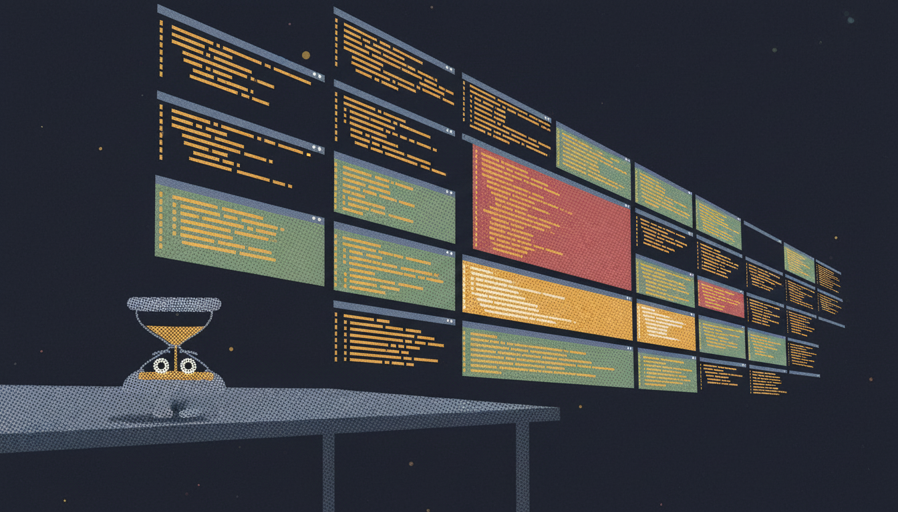
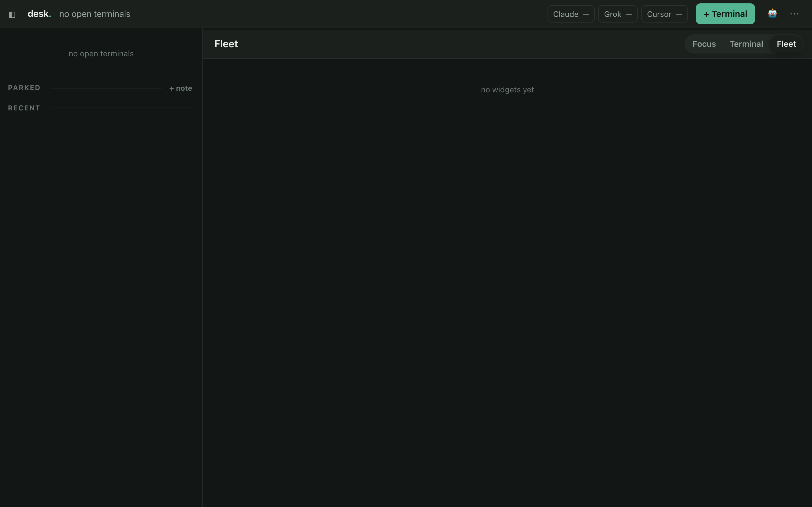
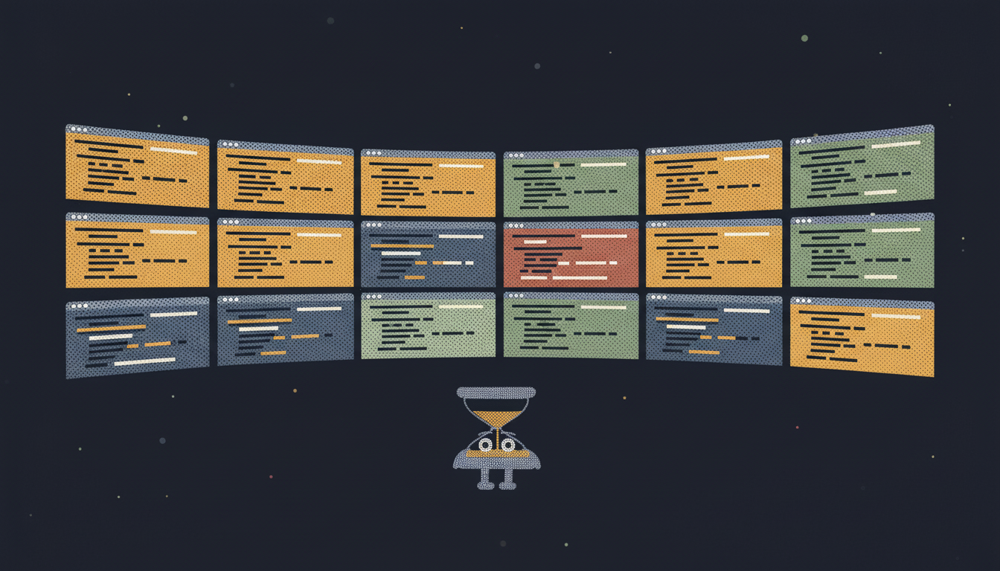
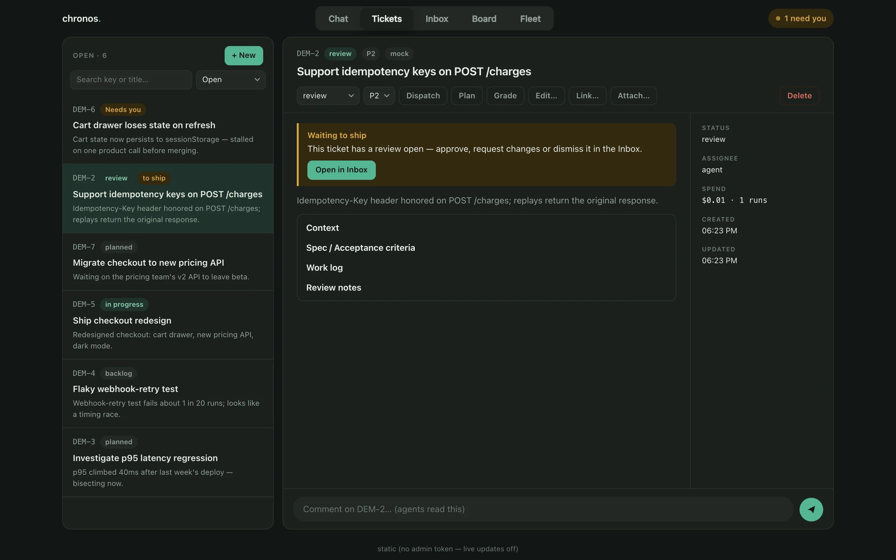
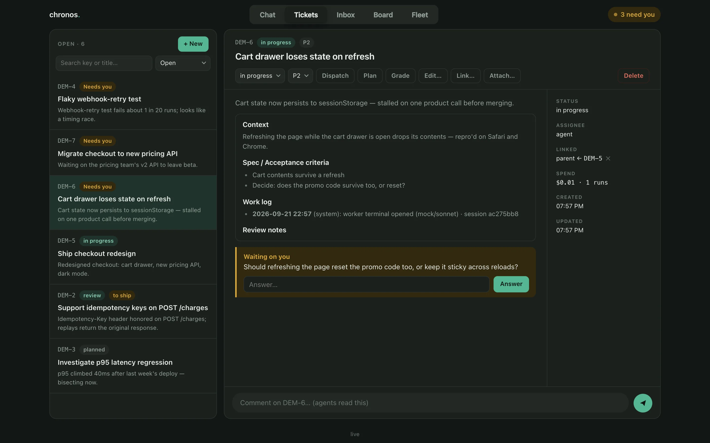
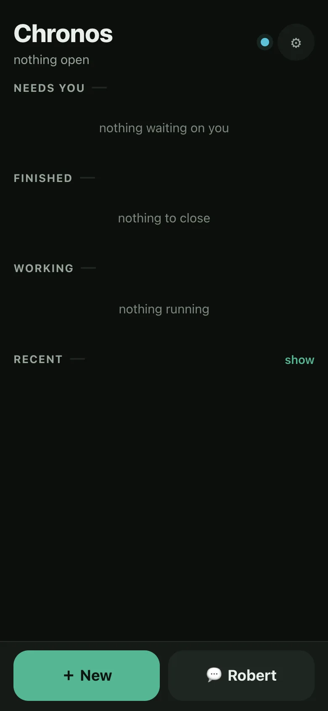

One of you. A fleet of them.
You already pay for Claude Code, Codex or Cursor. Today you run one at a time, watching. Chronos runs as many as your machine and your subscriptions allow — in parallel, around the clock — and interrupts you only for a decision.
Chronos sets no ceiling on how many run at once — your machine and your subscriptions do.
It works the hours you don't, too.
A local daemon that runs AI coding agents unattended.
One Node process on your machine · your own subscriptions · no account, no cloud
git clone https://github.com/leorfer23/getchronos.git && cd getchronos
npm ci
npm start
Tonight, without Chronos
You open a terminal and paste the task. You watch it work. It stalls on something dumb; you nudge it. It asks a question; you are there to answer, or it sits dead. You close the laptop and it dies with the session. One agent, one task, all of your attention — and only while you are awake.
Tonight, with Chronos
You work the Desk all day — a wall of live terminals you read and type into. Close the laptop and the work does not stop: it grades the ticket and picks a model to match, opens a git worktree so agents cannot trip over each other, watches for a run that has stalled, and answers what it can from the project's own memory. It wakes you only for what it cannot. By morning: a diff read, a PR open, a receipt of what shipped and what it cost.
What it actually is
- A daemon. One Node process you run on an always-on Mac.
npm start, and that is the install. - A supervisor. It does not write code — it decides which agent writes it, watches it, and judges the result. Plan, build, review, merge-gate are separate runs with separate prompts and separate permissions.
- Yours. Every ticket is a file, every run is a SQLite row, every agent works in a git worktree on your disk. There is no Chronos server for any of it to go to.
The Desk
Every terminal, live, as a wall of cards you read and type into. Not a dashboard about the work — the work itself.

- Focus mode. The composer is the same door, at the caret — drop a file or type mid-sentence and it lands exactly where you were writing.
- Drop into anything. A headless run can be interrupted into a live terminal mid-flight, and back out again, without losing its context.
- An assistant that is always there, watching the whole wall and answering what it can from the composer at the bottom.
- A card tells you before you open it — what it is doing, what it has spent, whether it is waiting on you.

The same wall, in your pocket
/phone is a PWA behind your own authenticating tunnel. Triage from bed or the street: read a question an agent parked, answer it, and the run resumes.
- Voice. You talk, it transcribes, and it goes down the same agent path. Transcription defaults to a local whisper.cpp server on your own Mac — no key, no per-use cost — or point it at a cloud endpoint if you want.
Whatever you already pay for
Five backends, one queue of work. A difficulty grade routes each ticket to a model tier, so a cheap model grades and an expensive one builds.
You bring the auth for each; Chronos adds no fee of its own.
Context that does not evaporate
- Recall. Full-text search over every transcript, ticket, note, skill and session — instant.
- Memory you can read. Notes live as files, not a black box.
- Resume the exact conversation. A run that parked on a question continues the same session when you answer, instead of starting over.
- Agents ask each other first. A worker escalates a question up a chain instead of guessing; the answer comes from the project's own memory when it can.
Jobs, headless, and the night shift
The same daemon also runs scheduled and unattended work — cron jobs, headless dispatch. Nine hours, real behavior, nothing invented. This is the pay-off, not the premise.
The night's log
Nine hours, real behavior, nothing invented. Every line below maps to something true in the daemon's own docs.
-
Ticket filed. Worktree opened.
A ticket is a commitment to do one piece of work — a key, a lifecycle, a file the agent actually reads. It gets its own worktree: a separate checkout of the repo, so two agents can never edit the same files.
src/tickets.ts · src/worktrees.ts -
A cheap model grades. An expensive one builds.
A cheap model scores the ticket's difficulty first; the score picks which model builds it — so a trivial fix never gets billed to the one reserved for the hard stuff.
src/quota-gate.ts -
storefront stalls. It files a card. It does not retry.
When a run stops emitting progress, the supervisor kills it and opens an approval card. An automatic retry on a real failure is just the same failure again, twice as expensive.
src/monitor.ts -
docs-site stops and asks. Your phone buzzes.

src/asks.ts · src/ask-robert.tsmc askparks the run on a real question instead of guessing — freezes it mid-task and keeps its context for when you answer. It goes to the coordinator first, who answers it from the project's own memory, or wakes you. -
You answer from bed. It resumes.
A headless run can be interrupted into a live terminal mid-flight, and back out again, without losing its context.
POST /api/runs/:id/continue -
A review run reads the diff.
Plan, build, review, grade, CI-fix, merge-gate — each is its own run, with its own prompt and its own tool scope.
src/runner.ts -
Rework, round two. Oldest complaint first.
Every review is fed back in full, in order, with one instruction: satisfy all of them at once. A ticket once oscillated three rounds because it wasn't.
src/tickets.ts · evals/cases/rework.json -
Merge gate.
A last run that re-reads the PR and decides whether it may land — checking what was promised against what actually shipped.
src/runner.ts -
You wake up. The PR is open.

What it cost and what it learned are both sitting there — the learning part a file you can read, not a black box, mirrored one-way to
src/notes.ts · src/recall.tsnotes/<project>/*.md.
More proof, not mockups
A ticket moving through a run, a parked question, and the phone that answers it.

Ticket → run

Stop and ask

Phone
Your code, your keys and your tickets never leave the machine. Agents cannot read the credentials they use — the daemon injects them on the agent's behalf, and secrets are masked in transcripts.
Guardrails, honestly
- Sandbox, per job: off / guard / strict. guard denies secrets and every other project's directories, kernel-enforced via Seatbelt. macOS-only — elsewhere jobs run unsandboxed, and the daemon logs a warning for each job that hits that path.
- Project scoping is a security boundary. Any endpoint that touches a run or ticket by id checks it belongs to the caller's project. A missed check once let one project drain another's mailbox.
- Budgets and a burn guard: wall-clock timeout, per-run and daily spend caps, concurrency limits, and a halt on runs/hour and $/hour — a runaway can spend a whole day's budget in four minutes.
- Agents run with
--dangerously-skip-permissions. That's what unattended autonomy means. Everything above exists to bound it.
What this is not
- Not a hosted service, a CI system, or a product with a support contract.
- Built for one trusted operator on one machine — no multi-user model. The admin token is a bearer credential, not a login.
- Not something that quietly retries a real failure, or merges a change without the checks you configured.
- Open because the patterns are worth stealing — not because it's finished.